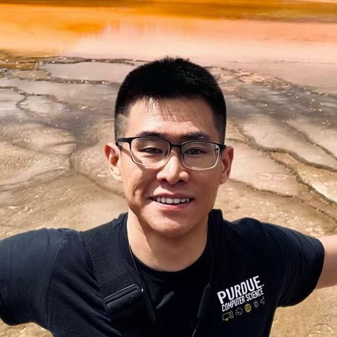

Yiran Hu
Ph.D. Student in Computer Science, Purdue University
I am a Ph.D. student in Computer Science at Purdue University, advised by Prof. Lin Tan in the ASSET group. I build, evaluate, and optimize LLM coding agents: test-driven repository-level code generation (TENET), realistic code-generation benchmarks (REPOCOD), and the cost efficiency of agents such as Claude Code on SWE-bench.
Before Purdue, I received my B.S. in Computer Science and Technology from Tianjin University, where I worked on deep-learning library and compiler testing with Prof. Junjie Chen.
I am open to research and engineering internship opportunities for Summer 2027. Feel free to reach out.
Publications
-
P1
Analyzing and Mitigating Cost-Inefficient Behaviors in Coding Agents
Preprint, 2026
-
C1
TENET: One Step Toward Test-Driven Development for Repository-Level Code Generation
ISSRE 2026 · IEEE International Symposium on Software Reliability Engineering Paper
- C2
- C3
-
C4
LocRDF: An Ontology-Aware Key-Value Store for Massive RDF Data
WISA 2022 · International Conference on Web Information Systems and Applications Paper
Experience
-
Graduate Research Assistant, ASSET Group, Purdue University 2023 – Present
LLM coding agents: test-driven code generation, benchmarks, and agent cost efficiency.
-
Teaching Assistant, Department of Computer Science, Purdue University 2023 – Present
CS 176 Data Engineering in Python (Fall 2023, Spring 2024, Fall 2025) · CS 251 Data Structures (Fall 2024) · CS 253 Data Structures and Algorithms for DS/AI (Spring 2025) · CS 571 Artificial Intelligence
-
Algorithm Engineer Intern, Zhongke Wenge Science and Technology, Beijing 2022
OCR detection and recognition pipelines on PaddleOCR.
-
Undergraduate Researcher, Software Analysis and Intelligence Lab, Tianjin University 2021 – 2023
Deep-learning library testing and differential testing of the LLVM and TVM compilers.
Education
-
Ph.D. in Computer Science, Purdue University 2023 – 2028 (expected)
-
B.S. in Computer Science and Technology, Tianjin University 2019 – 2023
Honors & Awards
- Best Paper Award Finalist, ICRA2025
- Outstanding Graduate, Tianjin University2023
- First Prize, Challenge Cup National College Students' Science and Technology Competition (Tianjin University)2022
- First Class Scholarship, Tianjin University2021
- Advanced Individual for Academic Performance, Tianjin University2021
Beyond Research
I enjoy hiking, basketball, and photography (Instagram).